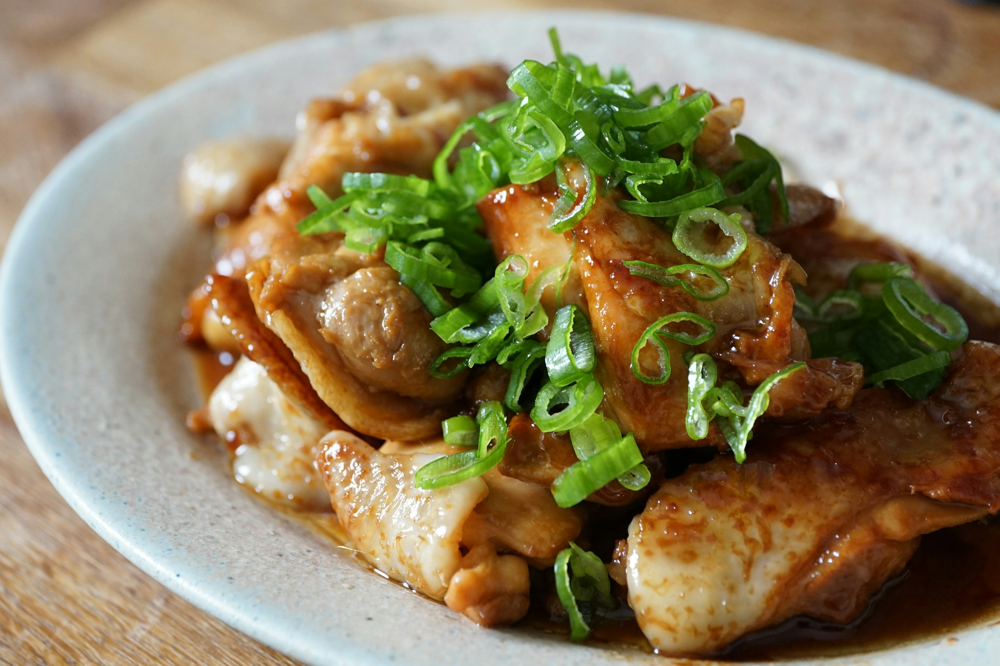

Teriyaki Chicken

Photo by Tomoyo S on Unsplash
Description
Delicious juicy japanese inspired home-style sirfry chicken recipe.
Ingredients
- Chicken Breasts or Thighs
- Soy Sauce
- Sesame Oil
- Honey
- White Wine Vinegar
- Cornflour
- Garlic Powder
Steps
- Mix cornflour with soy sauce, honey, and vinegar.
- Heat oil in a frying pan.
- Add chicken chunks and cook for about 10-15 minutes until the chicken is almost cooked through.
- Add garlic powder.
- Add sauce mixture and cook for about 5 minutes until everything is well coated and thickened.
Home